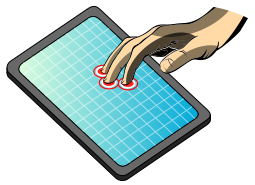

class: center, middle, title-slide ## CSCI 340 Operating Systems <br> ## Chapter 2: Operating System Structures .author[ Stewart Weiss<br> ] .license[ Copyright 2020 Stewart Weiss. Unless noted otherwise all content is released under a [Creative Commons Attribution-ShareAlike 4.0 International License](https://creativecommons.org/licenses/by-sa/4.0/). Background image: roof of the EPIC Museum, Dublin, by Stewart Weiss. ] --- name: cc-notice template: default layout: true .bottom-left[© Stewart Weiss. CC-BY-SA.] --- name: tinted-slide template: cc-notice layout: true class: tinted --- name:toc ### Table of Contents [About This Chapter](#summary)<br> [Chapter Objectives](#objectives)<br> [Services Provided by the System](#system-services)<br> [User Interfaces](#user-interfaces)<br> [Services For Users](#user-services-2)<br> [Schematic View of Services](#user-services-3)<br> [Command-Line Interface](#cli)<br> [Command-Line Interpreters and Terminals](#terminals)<br> [Command Implementation](#command-implementation)<br> [Graphical User Interface](#gui)<br> [Touchscreen Interface](#touchscreen)<br> [Batch System Monitor](#batch)<br> [About System Calls](#system-calls-1)<br> [Application Programming Interfaces](#apis)<br> [A Subtle Distinction](#technicality)<br> [Example Using System Calls](#syscall-example)<br> [The .fixed[read] System Call in UNIX](#read-syscall)<br> [System Call Implementation](#syscall-implementation-1)<br> [System Call Parameter Passing](#syscall-parameters)<br> [Under the Hood: System Calls](#syscall-implementation)<br> [Illustration of the Complete Flow](#syscall-complete-flow)<br> [Flow of .fixed[read] System Call in Linux](#syscall-read)<br> --- ### Table of Contents [Categories of System Calls](#syscall-types)<br> [Process Control](#process-syscalls)<br> [File Management](#file-syscalls)<br> [Device Management](#device-syscalls)<br> [Information Management](#info-syscalls)<br> [User and Group Management](#user-syscalls)<br> [Communication and Synchronization](#communication-syscalls)<br> [Protection](#protection-syscalls)<br> [System Programs](#sys-programs)<br> [References](#references)<br> <!--TOC_END--> --- name: summary ### About This Chapter The chapter examines operating systems from three different perspectives: - through the set of .greenbold[services] that it provides to .greenbold[users and programmers]; - through the set of .greenbold[interfaces] that it makes available to .greenbold[programmers]; - through its .greenbold[design and implementation], of interest to those study and design operating systems. It covers the following topics: - Operating system services - User interfaces - System calls - System programs - Operating system design and implementation structures - System boot --- name: objectives ### Chapter Objectives You should be able to - identify the services provided by an operating system and whether they are directed at users, programmers, or both; - explain in detail how system calls are used to provide operating system services to programs; - explain how operating systems and system software support program development and execution, from source code to executable image; - compare and contrast the different structural designs of operating systems, such as monolithic, layered, microkernel, modular, and hybrid; and - explain the process of booting an operating system. --- name: services layout: false class: center, middle, inverse ## System Services for Users We examine the ways in which users can obtain services from an operating system. --- template: tinted-slide layout: true --- name: system-services ### Services Provided by the System Recall from Chapter 1 that the operating system's services can be categorized, for the most part, as being in one of the following groups: - .greenbold[Program execution] - .greenbold[I/O operations] - .greenbold[File systems] - .greenbold[Communication] - .greenbold[Error detection and recovery] - .greenbold[Protection and security] - .greenbold[Accounting] as illustrated below. .center[ <img src="figures/services.png" width=100% alt="system services"> ] --- name: user-interfaces ### User Interfaces For a user to access any of these services, some type of user interface to the operating system is required. It can be any of: - .greenbold[Command-Line Interface] (.greenbold[CLI]) - .greenbold[Graphical User Interface] (.greenbold[GUI]) - .greenbold[Touch Screen] - .greenbold[Batch Monitor] These will be explained shortly. Regardless of which interface is used, users can access all types of services, although some may be more useful to users than others. --- name: user-services-2 ### Services For Users - .greenbold[Program execution]: The operating system gives users the ability to run applications and programs. This is an important category of service. - .greenbold[I/O operations]: The applications and programs run by users require input and produce output. The operating system provides the environment in which this can happen. - .greenbold[File systems]: Users and their software can create and delete files and directories, read and modify them, rename them, search through them, list properties of them, and share and protect them. The operating system provides support for all of this. - .greenbold[Protection and security]: Users need control of who can access their data. The operating system provides security and protection for both files and executing programs. -- Indirectly, users require services such as .greenbold[error detection and recovery] when their files get corrupted, or their programs "crash", or worse, when the system itself enters some error state. -- They also require that the system perform .greenbold[accounting] so that they can monitor things such as disk usage, memory usage, networking traffic and so on. -- Lastly, sometimes users explicitly request that the system .greenbold[manage resources], such as by requesting that certain programs run with lower priority, or by requesting that certain file systems be mounted in restricted modes. --- name: user-services-3 ### Schematic View of Services Users obtain services either directly through a user interface such as by typing a command in a command-line interpreter, or indirectly, by running an application that issues a request. In the first case, the command is executed by a .greenbold[system program]. In the second case, it might be either a system program or a .greenbold[system call] that provides the service. .center[ <img src="figures/user_services.png" width=100% alt="system services"> ] --- name: cli ### Command-Line Interface A .bluebold[command-line interface], (.bluebold[CLI]) is a type of user interface in which a user enters a command by entering .redbold[plain text] followed by a .redbold[newline] character. - Usually, there is a .redbold[prompt] of some kind to indicate that the user is supposed to enter the command. - The text must conform to the syntax expected by the interface. - When the newline is entered, the interface tries to run the command. -- A .bluebold[command-line interpreter] .redbold[ is a special type of command line interface] - it is a stand-alone program that can be used to interact with the operating system. A command line interface is more general - application programs such as .greenbold[emacs], .greenbold[MatLab] and .greenbold[GNU Octave] have command line interfaces, but they are not command line interpreters. -- In UNIX, a command line interpreter is called a .bluebold[shell]. A shell is not just a command line interpreter, but a .redbold[full-fledged programming language]. Examples of shells are - the .greenbold[.fixed[Bourne-again Shell]] (.fixedblue[bash]), - the .greenbold[.fixed[C Shell]] (.fixedblue[csh]), and - the original .greenbold[.fixed[Bourne shell]] (.fixedblue[sh]). -- .redbold[ A command-line interpreter can be run in a text terminal, which is a] .redbold[terminal that transmits data one character at a time, and can only display characters]. --- name: terminals ### Command-Line Interpreters and Terminals To use a CLI, the user must open a .greenbold[terminal] or a .greenbold[pseudo-terminal] window.super[1]. .footnote[ 1 You can also use a remote login program such as .fixedblue[ssh] to remotely login to a system, in which case you are automatically given a shell session. ] --- name: terminal-window1 template: terminals count: false .left-column-large[ <img src="figures/terminal_window.png" width=100% alt="terminal window"> ] .right-column-small[ In Linux, there is an application named .fixedblue[Terminal] that opens a window in which you can run a shell such as .fixedblue[bash]. ] --- name: terminal-window2 template: terminals count: false .left-column-large[ <img src="figures/terminal_window_1.png" width=100% alt="terminal window"> ] .right-column-small[ In Linux, there is an application named .fixedblue[Terminal] that opens a window in which you can run a shell such as .fixedblue[bash]. We can enter the .fixedblue[date] command by typing the word ".fixedblue[date]". ] --- name: terminal-window3 template: terminals count: false .left-column-large[ <img src="figures/terminal_window_2.png" width=100% alt="terminal window"> ] .right-column-small[ In Linux, there is an application named .fixedblue[Terminal] that opens a window in which you can run a shell such as .fixedblue[bash]. We can enter the .fixedblue[date] command by typing the word ".fixedblue[date]" followed by newline. The current date and time appears. ] -- .below-column[ Apple systems also have a .greenbold[Terminal] application, and Windows has both the .greenbold[Powershell] and the old standby, .fixedblue[command.exe], in which you can run DOS commands. ] --- name: command-implementation ### Command Implementation How are the commands that you enter in a CLI, such as .fixedblue[bash], executed? Where is their executable code? -- In UNIX and UNIX-like systems, a command can be implemented in one of two ways: - .greenbold[Within the shell itself], in which case it is called a .bluebold[built-in command]; - For example, in .fixedblue[bash], the .fixedblue[cd] command is a built-in command, as is the .fixedblue[read] command. - .greenbold[In a separate, executable file], in which case it is called a .bluebold[system program]; - For example, in Linux systems, the .fixedblue[grep] and .fixedblue[date] commands are in the files .fixedblue[/bin/grep] and .fixedblue[/bin/date] respectively. -- There are a handful of commands that are implemented in both ways, such as the .fixedblue[echo] , .fixedblue[kill], and .fixedblue[pwd] commands. --- name: gui ### Graphical User Interface The .greenbold[graphical user interface], or .greenbold[GUI], is an alternative user interface to the operating system. It requires a .greenbold[graphical terminal], which can display not just characters, but images. -- .left-column[ The GUI was invented at .greenbold[Xerox PARC], appearing in the Xerox Alto computer in 1973. Previously Ivan Sutherland developed a graphical program called .greenbold[Sketchpad] in 1963. Apple Computers introduced the first GUI as we know it in their .greenbold[Apple Lisa] in 1983 and the .greenbold[Apple Macintosh] in 1984. ] .right-column[ <img src="figures/macintosh_128k.png" width=45% alt="Apple Macintosh"> .sub[1] ] .footnote[ 1 Image from w:User:Grm wnr, CC BY-SA 3.0, https://commons.wikimedia.org/w/index.php?curid=519781 ] -- .below-column[ - A GUI emulates a desktop using a cursor-based window-and-menu system. The contents of the screen are graphical elements such as an active cursor, icons, images, and windows, which can represent files, directories, and applications. - The .greenbold[cursor] is moved by the user with a pointing device such as a .greenbold[mouse] or by voice commands. The cursor is used to execute commands, select elements, draw, etc. - Most systems provide a GUI, such as Microsoft's Windows, Apple's Mac OS X, and Linux's Gnome, or KDE. ] --- name: touchscreen ### Touchscreen Interface Keyboards and mice are not feasible input devices for mobile computing devices such as smartphones and tablets, making CLIs and GUIs impractical for them. .left-column[ These devices typically have .greenbold[touchscreens], which are both input and output devices. ] .right-column[  ] .footnote[ Image from User:Willtron, CC BY-SA 1.0, https://commons.wikimedia.org/wiki/File:Multitouch_screen.svg ] .below-column[ Touchscreen devices require a different interface: - actions and selections are based on .greenbold[gestures], which are not single point clicks, but motions, including location, velocity, and acceleration. - keyboards are on-screen for text entry - voice commands are supported. ] --- name: batch ### Batch System Monitor A .bluebold[batch processing system] is a type of computer system in which users submit .greenbold[jobs] that can run without user interaction. In modern systems, batch processing jobs are usually computationally intensive and require a large amount resources not usually available on a desktop computer. -- Users interact with a batch processing system through a .bluebold[monitor], which is a program that reads a batch of jobs, schedules the first one on the computer, and runs it. After each job is run, the monitor runs and selects the next job to run. A monitor has a limited interface with a .greenbold[job control language] that allows the user to specify the parameters of the job's run, such as how much disk space, memory, and so on, is needed by the job. A monitor is therefore another type of interface for interacting with the computer system. --- name: system-calls layout: false class: center, middle, inverse ## System Calls We examine system calls, the means by which programs obtain services directly from the kernel. --- template: tinted-slide layout: true --- name: system-calls-1 ### About System Calls A .bluebold[system call] is a call to code inside the kernel of the operating system made via a .greenbold[software interrupt] or .greenbold[trap]. .redbold[It is the means by which a user process explicitly requests a service from the kernel].super[1]. .footnote[ 1 Kernel processes do not make system calls. ] -- - Usually, system calls are not invoked directly from a user program. Instead, the program calls a .greenbold[wrapper function] that invokes that system call. - A .bluebold[wrapper function] is a function whose only purpose is to make a call to another function. It might perform some small amount of work before calling that function and then a bit more work after the call. - In the context of system calls, a .bluebold[wrapper function] is a function whose only purpose is to make the system call. - The wrapper function is part of a user level library and runs in user mode, whereas the actual system call is inside the kernel and runs in kernel mode. --- name: apis ### Application Programming Interfaces An .bluebold[Application Programming Interface] (.bluebold[API]) is a definition or collection of definitions that specify how a program is to obtain the services provided by some other piece of software. In the context of operating systems and the kernel, an API is the set of specifications of functions for obtaining the services of the kernel. -- A programming language needs to provide a means for programs written in that language to obtain kernel services. -- Therefore, programming language libraries usually provide wrapper functions in that language for all system calls. For example, the GNU C library, .fixedblue[glibc], contains wrapper functions for all of the system calls in GNU Linux. This is not to say that every function in that library is a wrapper function. It has other functions too. And it might have functions that make several system calls. But it is true that almost every system call in Linux has a wrapper function in .fixedblue[glibc]. -- The three most common APIs are the - .bluebold[WinAPI] for Windows (.bluebold[Win64] for 64-bit Windows), - .bluebold[POSIX API] for POSIX-based systems, which includes virtually all versions of UNIX, Linux, and Mac OS X, and - .bluebold[Java API] for the Java virtual machine (JVM) --- name: technicality ### A Subtle Distinction Technically, the function that your program calls to obtain services from the kernel .redbold[is not a system call], but the .redbold[wrapper function defined in the API]. .left-column[ Suppose that .fixedblue[foo()] is a system call. The library will have a wrapper with the same name. Your program will call .fixedblue[foo()], but this will invoke the wrapper, not the actual system call, which is invoked within the wrapper itself. In the illustration to the right, the string .greenbold[.fixed[SYSCALL]] is just a placeholder for the code that would switch to kernel mode and jump to the system call handler. ] .right-column[ <img src="figures/syscall_api.png" width=100% alt="system call" > ] -- .below-column[ When we say that a program calls some system call, we mean that it calls the corresponding wrapper function in the user-level library. ] --- name: syscall-example ### Example Using System Calls In Linux, the system call to read from a file is .fixedblue[read()], to write to a file is .fixedblue[write()], to open a file, whether for reading or writing, is .fixedblue[open()], and to create a new file is .fixedblue[creat()]. .left-column-small[ The Linux .fixedblue[cp] command has many uses, but the simplest use is to copy an existing file to a new file: .center[ ```bash cp oldfile newfile ``` ] A program that does this, with some pseudocode for error handling is shown to the right. It makes several system calls, which are highlighted in yellow. ] .right-column-large[ .smaller[ ```C int main(int argc, char *argv[]) { int in_fd, out_fd, n_chars; char buf[256]; /* check args */ if ( argc != 3 ) /* not enough args - report error and exit */ /* open first file and create new one */ if ( (in_fd = `open(argv[1], O_RDONLY)`) == -1 ) /* handle error - cannot open first file */ if ( (out_fd = `creat( argv[2], 0644)`) == -1 ) /* handle error - cannot create new file */ /* copy files */ while ( (n_chars = `read(in_fd , buf, 256)`) > 0 ) if ( `write( out_fd, buf, n_chars )` != n_chars ) /* handle write error */ if ( -1 == n_chars ) /* handle error - Read error from file */ /* close files */ if ( `close(in_fd)` == -1 || `close(out_fd)` == -1 ) /* handle error closing files */ return 0; } ``` ] ] --- name: read-syscall ### The .fixed[read] System Call in UNIX The .fixedblue[read()] system call is a powerful call in UNIX, because it can be used to read from anything that can be mapped to a file, which is to say all devices and files. We use it to demonstrate how you can learn about the Linux API from the manual pages. Type ".fixedblue[man read]" in a terminal to see the beginning of the manual page for it, which provides its API and also shows that the .fixedblue[unistd.h] header file must be included to use it.super[1]: ```C #include <unistd.h> ssize_t read(int fd, void *buf, size_t count); ``` .footnote[ 1 In C, any program that makes a system call must include .fixedblue[unistd.h]. ] The page shows that .fixedblue[read] has three parameters: .lightbluebox[ ```C int fd : an integer file descriptor that identifies the file from which to read void * buf : the address of the first byte of memory into which to store the data size_t count : the number of bytes to be read into the buffer ``` ] It returns a .fixedblue[ssize_t] result, which is the number of bytes actually read. --- name: syscall-implementation-1 ### System Call Implementation In the first chapter, you learned that when a trap occurs as a result of a system call, the mode bit is switched to kernel mode and a system call handler runs. This handler handles all system calls. The system call handler knows which system call to invoke because each system call has a number associated with it, that is read from a register. (In Linux it is in the .fixedblue[eax] register.) -- The kernel maintains a .greenbold[system call dispatch table] indexed according to these numbers. The table contains the address of the start of each system call in the kernel. The system-call handler invokes the actual kernel function, which runs in kernel mode, and when it is finished, it returns control back to the handler, which returns the exit status of the system call and any return values. -- .redbold[Question:] When a program makes a call such as ```C read(fd, buffer, 256); ``` how are the arguments of this function made available to the kernel? --- name: syscall-parameters ### System Call Parameter Passing There are three general methods for passing the arguments of calls to the kernel in a system call. - .bluebold[Register Method]: The simplest method is to put them into known registers in a specific order. When the number of parameters exceeds the number of available registers, or if the lengths of these parameters exceed the size of the registers, this does not work. - .bluebold[Block Method]: The parameters are stored in a block of consecutive bytes in memory, and the address of the block is passed in a register. - .bluebold[Stack Method]: The parameters are pushed onto the stack by the program and popped off the stack by the kernel. The problem with this is that there are usually two separate stacks - one for the user program and one for the kernel, and popping from one and pushing to the other is painstakingly slow. Neither the block method nor the stack method limits the number of parameters. .lightbluebox[ Linux uses a combination of the register method and the block method. If the parameters fit into the registers, it uses them, otherwise the block method is used. In the current version, Linux does not allow more than six parameters to a system call. ] --- name: syscall-implementation ### Under the Hood: System Calls Different operating systems implement system calls in different ways. We describe how they are implemented in Linux, which is roughly how they are implemented in MacOS X. The Windows implementation is different. -- The wrapper function for a system call in Linux usually does little more than the following: - It copies the arguments and the unique system call number to the registers where the kernel expects them; - It traps to kernel mode, at which point the system call handler in the kernel does some setup and then invokes system call itself; - It puts an error value in a special variable named .fixed[errno] if the system call returns an error number when the kernel returns the CPU to user mode. Depending on the call, it might do more than this, such as preprocessing the arguments or postprocessing results. -- This shows why the wrapper function exists: these actions could not be performed in the kernel itself. If nothing else, the trap to kernel mode must take place outside the kernel! --- name: syscall-complete-flow ### Illustration of the Complete Flow The diagram below depicts the complete control flow, from user mode to kernel mode and back, of a call by a main program to a fictitious system call named .fixedblue[foo]. <img src="figures/syscall_full_flow.png" width=95% alt="Control Flow of System Call"> - The code in the .fixedblue[glibc] library is a mix of pseudocode and assembly. The call .fixedblue[SYSCALL] does not really pass the number of the call; it would be in a register. - The system call handler is assembly code and it invokes the actual code in the kernel. The handler has already determined which function it is and the call .fixedblue[syscall_foo()] is just pseudocode - it would be assembly code to jump to that function. --- name: syscall-read ### Flow of .fixed[read] System Call in Linux The following diagram.super[1] depicts the sequence of events that take place when a .fixedblue[C] program calls the Linux .fixedblue[read()] system call. (The compiled call is to .fixedblue[_libc_read()]). .center[ <img src="figures/ksys-figure1.png" width=80% alt="system call"/> ] .footnote[ 1. by Alessandro Rubini, at http://www.linux.it/~rubini/docs/ksys/ ] --- name: syscall-types ### Categories of System Calls Most operating systems provide a large number of system calls. For example, there are more than four hundred in a typical Linux version. To put some structure around them, we can group most system calls into the following categories: - Process control - File management - Device management - Information maintenance - Communication and synchronization - Protection -- The next few slides briefly describe the calls in each category. --- name: process-syscalls ### Process Control The most important types of services provided by system calls related to process control fall into these subcategories: - creating and terminating processes - loading and executing processes - getting and setting process attributes - waiting for events - signaling events - registering signal actions, setting signal handling properties - allocating and freeing memory -- Processes and the kernel's support for them is the subject of Chapters 3 and 4 (.greenbold[threads].) --- name: file-syscalls ### File Management The most important types of services provided by system calls related to file management fall into these subcategories: - creating and deleting files and directories - linking and renaming files - opening and closing files - duplication of file descriptors - reading and writing files - repositioning read/write pointers - getting and setting file attributes -- File systems and the kernel's support for them is the subject of Chapters 13, 14, and 15. We will barely scrape the surface of this material in this course. --- name: device-syscalls ### Device Management The most important types of services provided by system calls related to device management fall into these subcategories: - requesting and releasing devices - reading and writing devices - getting and setting device attributes - logically attaching and detaching devices -- Chapters 11 and 12 cover mass storage systems and I/O. --- name: info-syscalls ### Information Management Some system calls perform services that are more administrative, the kind that only privileged users would use, such as setting the system clock. Some types of services falling into this category are: - getting and setting time or date - getting and setting system timers - getting and setting system data, such as host information, network inforrmation, etc. - getting accounting and performance information, such as CPU usage, memory usage -- This is an area that this course does not explore. --- name: user-syscalls ### User and Group Management Another group of administrative services relates to users and groups of users. Some types of services falling into this category are: - creating and removing users - creating, modifying, and deleting groups - getting and setting user information (ids, privilege levels, etc) - changing passwords -- This area is related to security and system administration. This course does not cover this material. --- name: communication-syscalls ### Communication and Synchronization Operating systems provide various means by which processes and users can exchange information, i.e., communicate. There are many system calls that fall into this category. The major ones are: - creating and deleting communication connections between processes - sending and receiving messages - setting up interprocess communication - setting up interprocess synchronization resources - transfering status information - attaching and detaching remote devices -- These topics are covered in Chapters 5 and 6. --- name: protection-syscalls ### Protection Different operating systems provide varying levels of protection. There are some system calls that most support, related to the following categories: - protection of files and directories - protection of memory - protection of devices and other resources -- Protection is barely covered in this course. --- name: system-programs layout: false class: center, middle, inverse ## System Programs This section explores system programs, which are standalone programs that are often distributed as part of an operating system installation, extending its utility and functionality. --- template: tinted-slide layout: true --- name: sys-programs ### About System Programs Recall from Chapter 1 ([System Programs](chapter01.html#system-programs)) that: > .bluebold[System programs] are typically programs shipped or > downloaded when the operating system is installed. and that almost all such programs can only be invoked as commands on the command line in a terminal window. -- But not every program that can be run from the command line is a system program. For example, we can run the .greenbold[Firefox web browser] from the command line: ```bash $ firefox ``` and it is an .redbold[application], not a system program. -- .redbold[When is a program an application and when is it a system program?] -- The distinction is fuzzy. --- name: sysprograms-apps ### System Programs versus Applications Clearly, word processors, game programs, spreadsheets, web browsers, and integrated development environments are applications. Equally clearly, shell programs, linkers and loaders, commands that allow you to manipulate files, check the status of running processes, terminate rogue processes, check for memory leaks, etc., are system programs. -- System programs are usually thought of as those programs that extend the functionality of the operating system and that make it convenient to develop software on the system. --- name: sysprog-categories ### Categorizing System Programs It is difficult to categorize all system programs, but generally speaking, we can lump them into some large groups as follows. Some examples in Linux are given. - .greenbold[File and directory manipulation] - creation, deletion, modification, printing, renaming, copying, checking and changing attributes - .greenbold[Status information] - obtaining system information such as time, date (.fixedblue[date]), resource utilization (.fixedblue[memusage]), process status (.fixedblue[ps]), device status - .greenbold[Software development] - compilers (.fixedblue[gcc]), linkers (.fixedblue[ld]), assemblers (.fixedblue[as]), interpreters and shells (.fixedblue[bash]), debuggers (.fixedblue[gdb]), tracers, profilers, version control, etc --- name: sysprog-categories-1 ### Categorizing System Programs (2) - .greenbold[Program loading and execution] - absolute loaders, relocatable loaders, dynamic linker/loaders (.fixedblue[ld-linux]), object dumpers (.fixedblue[objdump]), signal tracers (.fixedblue[strace]), etc. - .greenbold[Communication and network services] - remote logins (.fixedblue[ssh]), communicating with servers (.fixedblue[curl]), remote file transfer (.fixedblue[sftp],.fixedblue[scp]), send messages to a screen (.fixedblue[write]) - browsers, email clients, and such are applications, not system software. - .greenbold[Background services] - services that run in the background include ssh daemons (.fixedblue[sshd]), printer daemons (.fixedblue[lpd], .fixedblue[cupsd]), various other network daemons, and so on. They are started up at boot time and usually remain running until shutdown. --- name: prog-development ### Program Development We turn our attention to a special collection of tools - namely those used for program development. .redbold[Why do we single these out?] -- - Although computers now are used more by non-programmers than programmers, the earliest users were programmers, and much of the design and development was targeted towards making their development environments as productive as possible. -- - Program development tools such as editors, preprocessors, compilers, linkers, debuggers, profilers, dynamic linker/loaders have long been integrated into operating system packages. -- - Understanding the full journey from source code to a running process makes it easier to understand the reasons for many decisons in the design of operating systems. --- name: references ### References 1. Daniel P. Bovet, Marco Cesati. _Understanding the Linux Kernel_, 3rd Edition. O'Reilly, 2006. 1. Abraham Silberschatz, Greg Gagne, Peter B. Galvin. _Operating System Concepts_, 10th Edition. Wiley Global Education, 2018. 1. The GNU Operating System. https://www.gnu.org/ ---